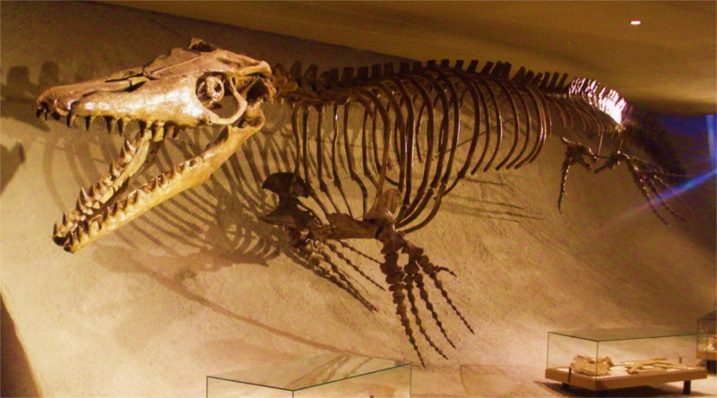

representacion de un mosasaurus
Los mosasaurus o lagartos del rio morsa fueron un genero de mosasáuridos que vivieron en los mares hace 0-66 millones de años en el actual Europa Occidental, Norteamérica, Sudamémrica y Antártida de la eda del Maastrichense en la epoca del Tardío superior sobre el periodo cretacico en la era Mesozoica. Los mosasaurus fueron superdepredador de los mas temibles que entre todos las familias el mosasaurus hoffmannii( de los mas conocidos) llegaban a medir unos 17 metros de largo y 2 metros de altura.Sus aletas delanteras eran mas grandes que sus aletas traseras.
fossil completo de un mosasaurus(hoffmannii).